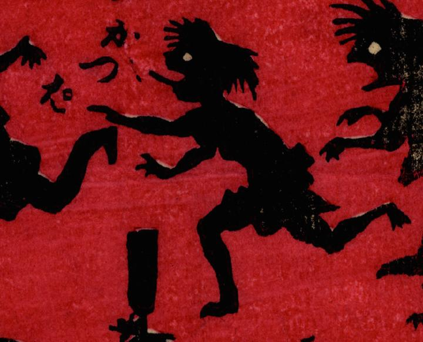

河童；カッパ

肩脱ぎで舌を出し、人間を追いかける河童。
著作者：小林英次郎／出典：親書誌：U426_nichibunken_0270：しん板かげゑづくし；シンパン カゲエズクシ／日付：2014／資源識別子：U426_nichibunken_0270_0018_0000
Copyright (c)2010- International Research Center for Japanese Studies, Kyoto, Japan. All rights reserved.